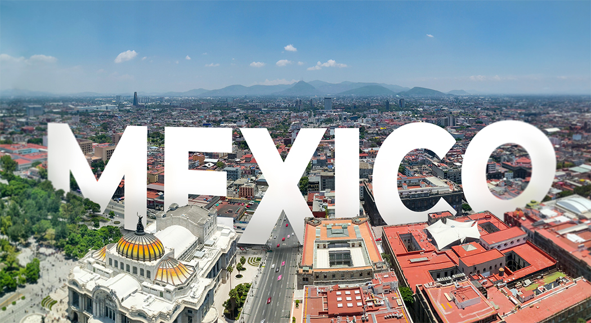
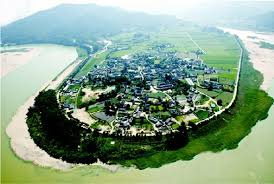
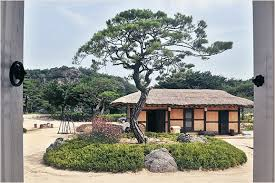
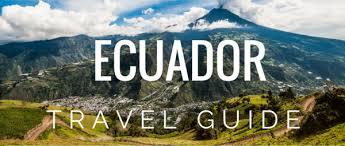
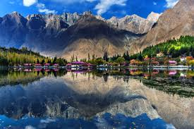
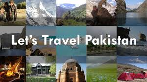

If you love traveling than this is the site to be in. Pod 1 will provide you with the traveling information you need to discover the world.

Income should not determine your exposure to the many wonders of the world. Traveling does not have to hurt your wallet. Most of all do not leave for the tomorrow what you could easily experience today.

Pod 1 travel site will provide you with all the information you need to visit some of the most beautiful places in the world. Places full of culture and wonders of the world.

If you’re planning to travel to South Korea and would like to visit authentic and traditional cities, I strongly recommend you visit the city of Andong. You can also visit the beautiful folk village of Hahoe which is about 30 kilometers from Andong


Ecuador is nestled between Colombia and Peru on the Pacific side of South America. Traveling around Ecuador is a beautiful experience. The food is incredible, there are lots of mountains and people are extremely nice. Adventure lovers will love to explore the Ecuadorian Amazon or to climb one of the country’s many volcanoes while other travelers can enjoy the sun of the coast between two surfing lessons.

Pakistan is blessed with four seasons, it depends upon travelers’ mood and nature what he/she wants to explore, in Winters coastal line of Pakistan is the best time to explore natural beaches. On way to the coastal highway, you will find the calm and beautiful beaches among all others in the world. You are snow lover then Northern areas of Pakistan in winters from December to March are in a category where heavy snowfalls each year. South and central Punjab had a unique cultural ambiance for cultural and food lovers, it’s unique in the world.
